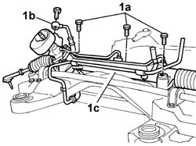

4130A10 POWER STEERING BOX - R.R.
- Path
- Procedures > 41 STEERING > 4130 POWER ASSISTED STEERING > 4130A POWER STEERING BOX > 4130A10 POWER STEERING BOX - R.R.
- Kind
- repair procedure (removal / refitting; the operation number is the code)
- Applies to
- all engines; all production periods
- Interactive page
- https://sloeber94.github.io/elrnDB-lThss/en/#/78760
Applies to: all engines; all production periods
 Removing
Removing
 Refitting
Refitting- Position the vehicle on the lift with the wheels perfectly straight.
- Mark the position of the steering wheel in relation to the upper half-casing.
- Proceed with removing the front suspension frame without dismantling the chassis components at the bench; carry out the appropriate operation
1. At the bench, undo the bolts (1a), disconnect the connector (1b) for the return pipe, then remove the power assisted steering box (1c).

Applies to: all engines; all production periods
Refitting
Removing- Position the power assisted steering box and fasten it to the frame tightening the bolts to the recommended torque.
 | Value - daNm | Fastening | Component | Ø |
|---|---|---|---|---|
. | 11 | Bolt | COMPLETE POWER ASSISTED STEERING BOX | M12 X 1.25 |
| Value - daNm | Fastening | Component | Ø |
|---|---|---|---|---|
. | 1.5 | Bolt | COMPLETE POWER ASSISTED STEERING BOX | M8 |
- Connect the connector for the reservoir return pipe to the steering box.
| Value - daNm | Fastening | Component | Ø |
|---|---|---|---|---|
. | 3 | Bolt | RETURN PIPE TO POWER STEERING RESERVOIR | M12 X 1.5 |
See in Op. 4410D10 Front suspension FRAME - R.R.
- Proceed with removing the front suspension frame without dismantling the chassis components at the bench;
- Remove the vehicle from the lift.